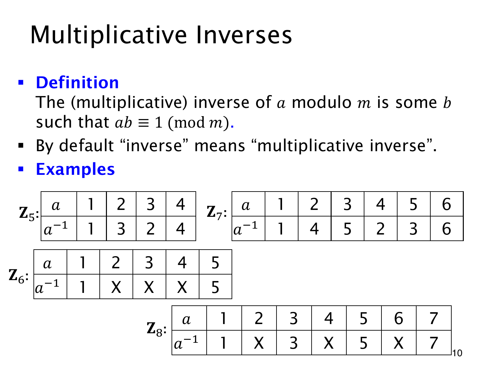

L1.13 · 第 10 页讲解原文
查看这一页课件

逆元表里的空格意味着什么
模 5 时，2⋅3=6≡1，所以 2,3 互为乘法逆元。一般记号 a−1 表示某个满足 ab≡1(modm) 的整数 b；这里取 m≥2，它与实数倒数 1/a 的含义不同。
表中每行按 a=1,2,…,m−1 对应：
| 模数 | 各个 a 的逆元 |
|---|---|
| 5 | 1,3,2,4 |
| 7 | 1,4,5,2,3,6 |
| 6 | 1,无,无,无,5 |
| 8 | 1,无,3,无,5,无,7 |
“无”表示不存在这样的整数。模 8 的 3,5,7 则各自自逆，因为平方分别为 9,25,49，余数都为 1。
素模数 5,7 下，非零元素没有缺项；合模数 6,8 下则有。判断依据是元素与模数是否互素，不能只看元素本身是不是素数。例如合数 4 在模 7 时仍有逆元 2。